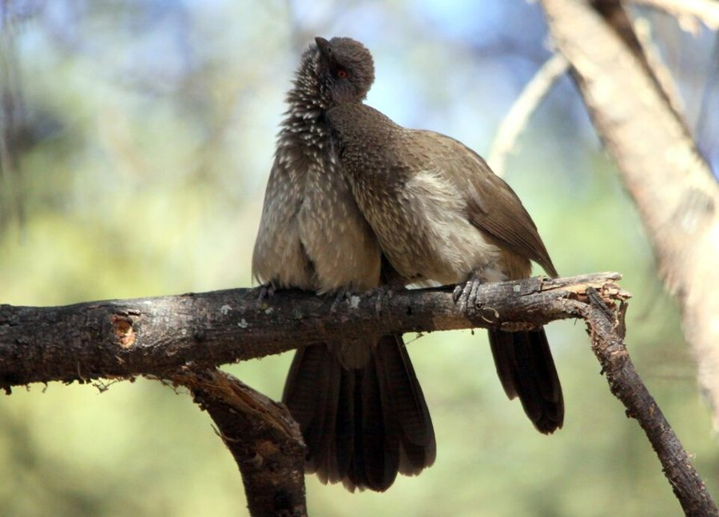
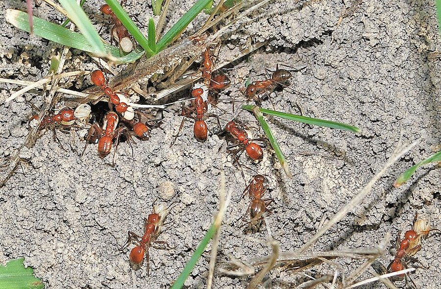
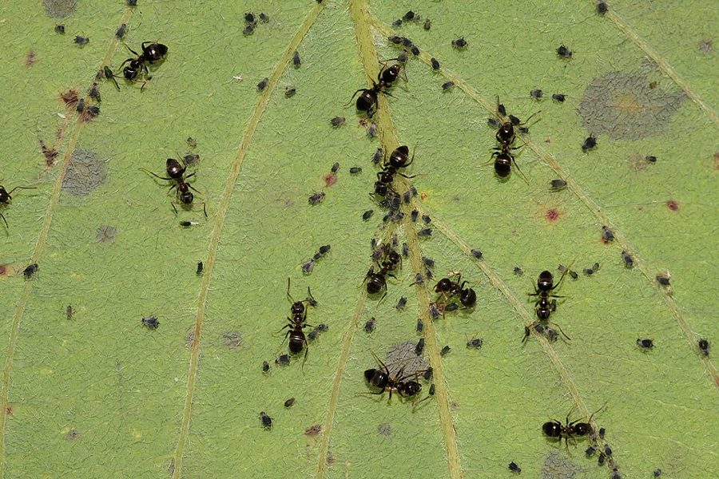
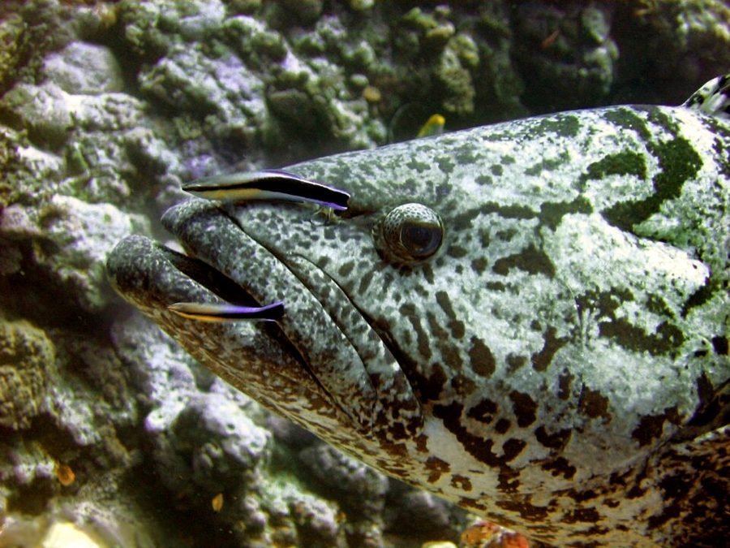
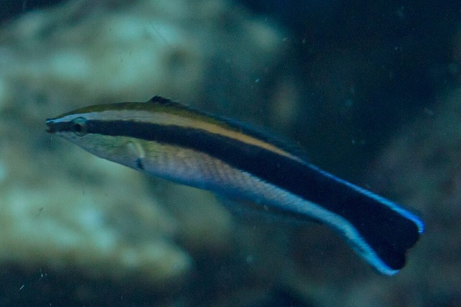

这一页在做什么
第 10 章的后半。上一页讲到膜翅目职虫和姐妹的亲缘是 3/4，这一页先把它变成一个能称重检验的预测：职虫和女王在「多养妹妹还是多养弟弟」上利益不同，巢里的雌雄投入比能透露谁说了算。接着从蚂蚁种真菌、养蚜虫讲到不同物种之间的互利，最后落到最难的一种合作：先帮你、过后才还。读的时候抓两条线：一个理论怎样变成可以拿数据检验的预测；延迟回报为什么离不开认人和记仇。

两只箭纹鸫鹛（Turdoides jardineii）在南非互相梳理羽毛：右边那只在给同伴理头顶，正是一只鸟自己够不着的地方。第 49 段的假想例子就是这样的「互相挠头」。Derek Keats，CC BY 2.0，维基共享资源 读之前：这一页在全书的哪里
上一页停在第 27 段：膜翅目雌虫和同父姐妹的亲缘是 3/4，比和自己的子女还近，作者说这很可能让职虫「耕耘」母亲替自己生妹妹。这一页第 28 段一开头就说有个麻烦：兄弟只有 1/4。第 29 段回到上一章（第 9 章）的 Fisher 性比率；第 31 段的「世代之战」是第 8 章的章名。第 50 段提到的囚徒困境，第 12 章（1989 年加的）专门讲。
职虫替母亲养孩子、鸟替同伴挠头，看起来都是利他。基因的眼光怎样把它们算成各自划算的买卖，又怎样拿数据去检验？
读的时候带着这几个问题。不用先找答案，读完回来对照「检查一下理解」。
女王「想要」1∶1，职虫「想要」3∶1，作者说这里没有真正的悖论。同一个基因，为什么在两种身体里「想要」的不一样？§5
为什么蓄奴蚁能当「关键检验」？替蓄奴蚁养孩子的奴隶，为什么它们的基因管不了这件事？§6
作者说物种之间的互利和同种个体之间的互利没有本质区别。他凭什么这样说？§7
斤斤计较者为什么要先过一个「临界比例」才能翻身？傻瓜的存在为什么反而害了它们？§8
这一页的路线
这一页是三段口味不同的路。§5、§6 是全书少见的「理论下注、数据开奖」：先从亲缘算出一个预测，再找一个特殊情形（蓄奴蚁）让预测反过来，最后坦白两个对不上的例子。读到第 37 段的「改密码」会觉得绕，那是在讲奴隶的基因为什么插不上手；第 40 段作者自己也说头晕了。§7 是一次转场：「耕耘」从比喻变成真的种地养畜，顺势滑到共生，中间第 46 段跳进对线粒体和病毒的猜想，作者自己标明是猜想。§8 回到模型：先立两种策略，再加第三种，交代自己在电脑上跑过。§9 落到清洁鱼，最后点到人类就收住。
模型
动物
猜想
3∶1 还是 1∶1 §5
称蚂蚁 §5
蓄奴蚁 §6
蜜蜂、多次交配 §6
真菌园、蚜虫 §7
线粒体、病毒 §7
三种鸟 §8
老鼠、清洁鱼 §9
人的心理 §9
本站示意图。蓝点是模型，橙点是真实的动物，紫点是作者明说的猜想；折线是阅读顺序。 作者落在哪： 性比率之争能拿蚂蚁的称重数据检验，作者认为结果站在职虫一边（1989 年的尾注承认批评相当有说服力）；不同物种之间的互利和同类之间的互利没有本质区别；先帮后还的互惠能在会认人、会记仇的动物里稳定下来，可骗子横行也同样稳定。
分节地图
这一页是原书第 10 章的第 5–9 节。原书各章没有小标题，粗体的节名是本站起的，下面是这一节第一段开头的几个词，在电子书里搜它就能跳过去。读完打个勾。
3∶1 还是 1∶1约 900 词 However, there is a catch … 从「兄弟只有 1/4」推出 3∶1 对 1∶1。第 30 段解释「想要」是什么意思，读两遍。第 32 段的星号是注 53，作者在那里降了温。 蓄奴蚁和两个反例约 1100 词 This arises from the fact that there … 第 34–38 段讲蓄奴蚁为什么能当关键检验；第 39–40 段两个对不上的例子，蜜蜂好解释，多次交配更麻烦。 种真菌、养蚜虫、线粒体约 1300 词 I have used the analogy of farming … 「耕耘」换成字面意思：真菌园、蚜虫。第 44 段给共生下定义；第 46 段是猜想，第 47 段收回来。 傻瓜、骗子、斤斤计较者约 1600 词 The evolution of associations of mutual benefit … 先讲延迟回报的难处，再立傻瓜和骗子，第 53 段加上斤斤计较者。第 55 段是一段模拟实况，可以对着下面的模拟器读。 清洁鱼、骗子鱼和人类约 700 词 By the way, my hypothetical example about … 老鼠和清洁鱼两个真实例子，第 58 段的「固定地点」是关键。第 59 段讲人类，末句「金钱」那句，译本没有。
先用中文过一遍：这一页的概念
先把这一页用到、作者默认你懂的几个概念讲一遍。讲的是概念本身，作者拿它推出什么，读原书时自己看。前面讲过的单倍二倍性 、不育的职虫 、性比率 、进化稳定策略 ，点进去看。
§5 性比率之争 queen–worker conflict over sex ratio Robert Trivers 和 Hope Hare 1976 年提出的问题。第 9 章 Fisher 的道理是：哪个性别在种群里少，养它的每一份投入回报就高，所以按投入算，母亲的最优是儿女各一半。膜翅目把这笔账打乱了：在只有一个女王、女王只交配过一次的巢里，职虫和妹妹的亲缘是 3/4，和弟弟只有 1/4。把这个不对称放进 Fisher 的计算，职虫的最优是在有生殖力的妹妹和弟弟身上按 3∶1 投入，女王的最优仍是 1∶1。两个比例都按投入（干重）算，不按只数，因为很多种蚂蚁的新女王比雄蚁大得多。一个巢实际养出来的比例，就成了「谁说了算」的证据。打个比方：同一段代码跑在两个权限不同的进程里，各自能动的开关不同，最优做法也就不同。「性比率之争」是本站起的名字，书里说的是 conflict of interests。
女王
新女王 1/2 雄蚁 1/2
职虫
新女王（妹妹）3/4 雄蚁 1/4
按投入（干重）算。职虫：和妹妹亲缘 3/4，和弟弟 1/4
本站示意图。单个女王、只交配一次的巢里，两方各自最想要的雌雄投入比。 在这一页： 第 29–31 段立起这个冲突，第 32–38 段用蚂蚁检验它，第 39–40 段是对不上的例子。作者 1989 年在注 53 里又补了一层，见下面的尾注一节。
§7 互利共生 mutualism; symbiosis 不同物种之间双方都得益的关系叫互利共生（mutualism）。共生（symbiosis）原本泛指不同物种长期生活在一起，也包括一方得益、一方受害的寄生，日常说「共生」时常只指互利的那种。书外的常见例子：豆科植物和根瘤菌，植物供糖，细菌固氮；造礁珊瑚和体内的虫黄藻。要和两样东西分开：一是亲属之间的帮助，靠的是共享基因（亲属选择）；二是先帮后还的互惠，要记账。互利共生多半是当场交割：蚂蚁护着蚜虫，当场喝它的蜜露，谁也不用先垫付。即便如此，共生里也常有搭便车的，比如在花冠上咬个洞偷蜜、却不替花传粉的昆虫。
在这一页： 第 44 段下定义；第 47 段说按基因的眼光，物种之间的互利和同种个体之间的互利是一回事，接着引出延迟回报的难题。
§8 相互利他行为 reciprocal altruism Robert Trivers 1971 年在《生物学季评》的论文里提出：没有亲缘的个体之间，「我先帮你，你以后帮我」的行为也能被自然选择保留。今天通行叫「互惠利他」。它和互利共生的区别是有时间差：帮的一方先付代价，回报要等。时间差带来骗子问题：拿了好处不还的个体占便宜。所以它需要几个条件：同一对个体会反复相遇，认得出对方，记得住谁欠过账。程序员熟悉的类比是 BitTorrent：客户端优先给向自己回传多的节点上传，只下不传的节点会被「掐断」（choke），分不到带宽。今天常和第 12 章的囚徒困境 放在一起讲。
在这一页： 第 2 段预告，第 50 段正式提出，第 51–55 段用三种鸟的模型讲它怎样稳定。作者说 Trivers 写论文时还没有 ESS 这个概念，猜他有的话会用；这一页接着就用 ESS 来讲。
动手：模拟器
先猜：种群里大多数是谁都帮的傻瓜，混进 11% 的骗子和 11% 的斤斤计较者。骗子先发财是肯定的。等傻瓜被吃光以后，只剩骗子和少数斤斤计较者，斤斤计较者还翻得了身吗？再点「跑 400 代」验证，对照第 55 段读。
模拟器 傻瓜、骗子、斤斤计较者：谁留下来 300 只鸟，每代随机分成小群，每只鸟头上长 30 次蜱，每次找同群的一只鸟帮忙：傻瓜谁都帮，骗子谁都不帮，斤斤计较者谁都帮、只是不帮拒绝过它的。被帮一次得 10 分，帮人一次扣「代价」分；下一代每种鸟的只数按得分分配。书里一个收益数也没给，这些数和「分小群」都是本站定的。先直接点「跑 400 代」。
试试看：用默认开局点「跑 400 代」，对照第 55 段：傻瓜先崩盘，骗子在最后一只傻瓜死掉时（第 97 代前后）到顶，约 92%；这期间斤斤计较者从 11% 慢慢掉到 7% 左右，勉强撑住；之后慢慢回升、越涨越快，到第 290 代骗子只剩三只，最后一只又拖了二十多代，第 316 代才灭绝。
试试看：开局换成「骗子 85%，斤斤计较者 15%」跑一次，再换成「骗子 92%，斤斤计较者 8%」跑一次：临界比例大约在 10%。然后把「鸟群大小」拖到 20，重跑 15% 那个开局：一群鸟多了，同一对鸟在一代里再碰面的机会少，记仇就不灵了。最后把鸟群大小拖回 10、开局换回第 55 段那个，再点几次「换一批鸟」重跑：大约每三批就有一批斤斤计较者会输，有的要再跑一阵才分出来。默认开局只比临界线高一点，是走钢丝。
试试看：点「画出引力区」，看三角形里哪片落到骗子、哪片落到斤斤计较者；把「梳理一次的代价」拖到 4 再画一次，骗子那片变大（第 54 段：哪个引力区大，取决于收益数字）。再在三角形底边正中点一下（骗子、斤斤计较者各一半，没有傻瓜）跑一次：骗子和斤斤计较者一样多、只是没有傻瓜时，斤斤计较者几十代就赢了。对比默认开局，这就是第 55 段末尾那个悖论：傻瓜养肥了骗子。
两件书里说了、这个模拟器演不出来的事：第 52 段说只有傻瓜和骗子时，整个种群很可能灭绝；注 54 里 Mackie 说停在「骗子」那个 ESS 的种群更容易灭绝。本站的模型把鸟数固定在 300 只，演不出灭绝，只能看「这一代求助没人管」那个数涨到 100%：全是骗子时，谁头上的蜱都没人管。另外，第 53 段说骗子稀少时「很难两次碰到同一个记仇者」，在这个模型里体现为骗子跌到几只以后减得慢，最后一只能拖二十来代，但比起书里说的「相当长的时间」要短。
书里的人和研究
按在书里出现的顺序排，标题前是节号。只讲到读懂这一页需要的程度。
§5 Trivers 和 Hare 称蚂蚁Trivers 和 Hope Hare 1976 年在《科学》上发表长文《单倍二倍性与社会性昆虫的演化》。他们把多种蚂蚁有翅繁殖蚁的只数和干重放在一起，换算成雌雄投入比。论文摘要说：20 种单个女王的蚂蚁，雄∶雌的投入约 1∶3，正是职虫的最优；两种蓄奴蚁（Leptothorax duloticus 和 Harpagoxenus sublaevis）约 1∶1，是女王的最优。第 32、38 段讲的就是这两组数。
Robert L. Trivers 1943–2026 美国演化生物学家，1971–1974 年连发互惠利他、亲代投资、亲子冲突几篇论文，本书第一版的序言就是他写的。在这一页里是性比率检验和互惠利他两处的主角。
§5 批评者：Alexander、Sherman 和 Grafen（注 53）Richard Alexander 和 Paul Sherman 1977 年也在《科学》上发文，题目里的「局部配偶竞争」是 Hamilton 1967 年提出的另一种解释：兄弟们若在家门口争同一批雌性，母亲多生女儿本身就划算，不必是职虫在操纵。他们同意蚂蚁的性比普遍偏雌，但不认为数据和 3∶1 吻合得那么好。Alan Grafen 是 Dawkins 在牛津带出来的理论生物学家，指出了第一版讲法里另一处更麻烦的漏洞（见尾注一节）。
§6 蓄奴蚁
一种蓄奴蚁 Polyergus lucidus 突袭了 Formica incerta 的巢后返回，有几只叼着白色的茧状物。它不是 Trivers 和 Hare 用的那两种。James C. Trager，CC BY-SA 3.0，维基共享资源 蓄奴在蚂蚁里独立出现过好几次。以 Polyergus 属为例，工蚁的上颚像一对弯刀，几乎不会自己觅食、育幼，靠突袭别种蚂蚁的巢、搬回蛹过日子；蛹在它们巢里羽化后，就照本能干起家务。第 34–37 段要用的正是这一点：在蓄奴蚁巢里照料幼虫的是和女王毫无亲缘的奴隶，女王的「对手」换了人。
§7 切叶蚁的真菌园和放牧蚜虫的蚂蚁
切叶蚁扛着切下的叶片回巢。Bandwagonman，CC BY-SA 3.0，维基共享资源
第 42 段的 parasol ants，译本：「阳伞蚁」 ，今天通称切叶蚁，是美洲热带的 Atta 和 Acromyrmex 两属。工蚁切下叶片扛回巢，嚼碎了养一种真菌，吃的是真菌。非洲的一类白蚁也独立演化出了种真菌的本事。第 43 段的蚂蚁和蚜虫是另一种「农业」：蚂蚁用触角拍打蚜虫，接住它排出的含糖蜜露，顺带赶走瓢虫这类天敌。

黑毛蚁（Lasius niger）在叶片上照看一群蚜虫。ImagePerson，CC BY 4.0，维基共享资源 §7 线粒体的来历第 46 段说「最近有人有理有据地论证」线粒体原是共生细菌，书里没点名。主要指 Lynn Margulis（1967 年发表时署名 Lynn Sagan）在《理论生物学杂志》上的长文，她重新提起了内共生说：线粒体、叶绿体曾是独立生活的细菌。这在当时很有争议。作者顺着它往下猜「每个基因都是共生单位」「病毒是出逃的基因」，前一个他自己说谈不上有「证据」。
§8 Williams、Trivers 和 Mackie（注 54）第 50 段说 G. C. Williams 在 1966 年的《适应与自然选择》里简短讨论过延迟回报，结论和达尔文一样：只在能认出、记住彼此的物种里才可能演化出来。Trivers 1971 年的论文往前推了一大步。注 54 引的哲学家 Mackie 从作者的三种鸟看出：停在「骗子」那个 ESS 的种群更容易灭绝；作者说这可以发展成一种类群选择的论证。
J. L. Mackie 1917–1981 澳大利亚出生的哲学家，1967 年起在牛津大学，著有《伦理学：发明对与错》（1977）。注 54 里，他指出停在「骗子」那个 ESS 的种群更容易灭绝。
§9 清洁鱼和冒牌货
两条裂唇鱼（Labroides dimidiatus）在给一条大石斑鱼（Epinephelus tukula，英文俗名 potato cod）清理，摄于珊瑚海的 Osprey 礁。Richard Ling，CC BY-SA 2.0，维基共享资源 第 57 段说约 50 种小鱼和小虾以替大鱼摘寄生虫为生，书里没点名种类。印度洋—太平洋珊瑚礁上最常见的是裂唇鱼，身上一条黑色纵纹，在固定的「清洁站」营业。第 58 段的骗子鱼，一般指一种鳚鱼 Aspidontus taeniatus（英文俗名 false cleanerfish），长相、条纹和裂唇鱼几乎一样，游近大鱼却咬一口鳍或皮肉就跑。

Aspidontus taeniatus，摄于菲律宾。和上图的裂唇鱼对照着看。Diego Delso，CC BY-SA 4.0，维基共享资源 词与短语
按节排，每节前面是分节地图里的节名。标着「每个字都认识」的，是熟词生义、习语和反话，最容易读错。灰色的那几个字是原句里的位置，在电子书里搜它就能找到。
§5 3∶1 还是 1∶1
there is a catch
… However, there is a catch. …
这里有个麻烦
catch 在这里是「暗藏的问题、圈套」，不是「抓」。上一页刚说完 3/4 的好处，这里马上转折：兄弟只有 1/4。
show a profit
… the farm would not show a profit …
（账面上）有赚头
会计用语。作者把职虫比作经营母亲这座「农场」的人：儿女一半一半的话，这笔经营对职虫不赚钱。
the levers of power
… the levers of power that happen to …
手边的权力杠杆
作者的比喻：基因不能随意行事，只能扳动它所在的那具身体能扳动的开关。同一个基因在女王体内和职虫体内，手边的开关不同。
down on the farm
… conflict of interests down on the farm.
在这座「农场」里
down on the farm 本是「在乡下农场」的俗语，作者顺着「耕耘母亲」的比喻开玩笑。
brood mare
… the queen as their brood mare, …
配种的母马
养来专门生驹的母马。把女王说成职虫的种母马，和「女王」这个名号正好颠倒，是作者故意的。
lives up to her name
… the queen really lives up to her …
名副其实
如果女王真像个女王，职虫只是她的奴仆，比例就该是 1∶1。
a battle of the generations
… special case of a battle of the …
世代之战
第 8 章的英文章名就是 Battle of the generations，讲亲子冲突。这里说女王和职虫之争是它的一个特例。
put to the test
… that can be put to the test …
拿来检验
只是「检验」，不等于「证明」。译本这里译成了实验证明，见译本勘误。
a rather convincingly close fit
… found a rather convincingly close fit …
吻合得相当令人信服
rather 是「相当、颇」，带一点保留。这句后面的星号就是注 53，作者 1989 年在那里又降了温。
running the show
… the workers are running the show …
当家作主、说了算
run the show 是口语「主持大局」，和演出无关。
§6 蓄奴蚁和两个反例
get on with
… stay at home and get on with …
照常干（日常的活）
get on with 是「继续做、埋头做」，不是「和……相处」。奴隶留在家里照常打理蚁巢。
blissfully ignorant
… blissfully ignorant of the fact that …
浑然不觉
blissfully 在这里是「傻乐着、毫不知情地」，修饰 ignorant，不是说这是件好事。译本这里读错了，见译本勘误。
new platoons of slave-makers
… rearing new platoons of slave-makers.
一批批新的蓄奴兵
platoon 是军队的排。奴隶养大的，是下一批去抓奴隶的蓄奴蚁，也就是将来去抢它们同类的兵。
get away with
… able to get away with countermeasures …
（做了）也不吃亏、得逞
get away with 是「做了某事却不受惩罚」。蓄奴蚁的女王搞小动作，奴隶这边没有选择压力去反制。
if anything
… will, if anything, be busy breaking …
真要说的话；甚至
不是「如果有什么」。意思是：奴隶的基因就算在破译什么，破的也是自己老家那个女王的密码，用错了地方。
involved argument
… The upshot of this involved argument …
绕来绕去的论证
involved 在这里是「复杂、曲折」，不是「参与的」。upshot 是「最终结果」。
have it all her own way
… the queen will have it all her …
完全照她的意思来
for once 是「难得一回」：平时职虫占上风，只有在蓄奴蚁里女王才能为所欲为。
weighed in the balance
… should be weighed in the balance against …
放到天平上和……比
既是字面（称重算投入），也是习语「权衡」。分蜂时带走的工蜂，要算进雌性那一边的投入。
a spanner in the works
… A more awkward spanner in the elegant …
（往机器里扔的）扳手，捣乱的东西
英式俗语 throw a spanner in the works，坏了好事。作者说多次交配是这个精巧理论里更难办的一根扳手。
It is tempting, though probably not very logical
… It is tempting, though probably not …
我忍不住想……虽然多半不太讲得通
作者先说出一个拟人的玩笑（女王对职虫的巧妙一击），又自己打折扣。这个玩笑是作者自己的，不是「有人这样解释」。
trade-union spirit
… There is no trade-union spirit among …
工会精神，同一阶层的团结
职虫不是一个会替下一代职虫谋利益的「阶级」，每一只只「关心」自己的基因。译本没有这一句。
My head is now spinning
… My head is now spinning, and …
我的头都转晕了
作者自嘲，承认这段推理已经绕得太远。
high time
… it is high time to bring this …
早该……了
high time 不是「高兴的时候」，是「早就到时候了」。
§7 种真菌、养蚜虫、线粒体
a gene farm
… The farm is a gene farm.
基因农场
作者先说清：前面讲的「耕耘母亲」是比喻，农场里产的是基因的拷贝；接下来要讲的是蚂蚁真的种地。
providential food
… the providential food known as …
天赐的食物
指《旧约》里的吗哪（manna）。作者用的是 may well have been：蜜露很可能就是吗哪的来历，不是「像吗哪一样」。
the better to
… the better to attract ants.
好更能（吸引蚂蚁）
the better to do 是「为了更好地做」，句子开头的 It has been suggested 说明这是别人的推测。
lead a sheltered life
… they lead a sheltered life, and …
过着被呵护的日子
sheltered life 常说人「不经世事、被保护得很好」。被蚂蚁照料得多的蚜虫，丢掉了自己的防身本领。
an idea whose time has come
… an idea whose time has come.
时候到了的想法
化用一句名言（一般归于雨果）：时机成熟的思想，任何力量都挡不住。作者用它说内共生说该被接受了。
I speculate
… I speculate that we shall come to …
我猜想
作者明说下面是猜想：每个基因都是共生单位。几句之后还有 One cannot really speak of evidence。
the other side of this coin
… The other side of this coin is …
反过来看
同一件事的另一面：既然基因是合作的共生者，病毒就可能是叛逃的基因。
broken loose
… genes who have broken loose from …
挣脱出来
break loose 是挣脱束缚，像逃出笼子。
might just as well
… we might just as well regard ourselves …
（那）也不妨看成
might just as well 是「也完全可以、不妨」，口气是「既然如此」，不是「也许也」。前面的 If this is true 不能丢。
speculations for the future
… But these are speculations for the …
留给将来的猜想
作者自己收住：上一段关于基因和病毒的话都是猜想。
get more out than he puts in
… can get more out than he puts …
得到的比投入的多
get out / put in 是投入产出的说法。这是作者给一切互利关系定的唯一条件，不管是不是同一个物种。
§8 傻瓜、骗子、斤斤计较者
nothing is easier than
… but nothing is easier than for a …
再容易不过
字面「没有什么比……更容易」，就是「最容易」。自己够不着头顶，朋友替你摘却轻而易举。
back-scratching
… enter into mutual back-scratching arrangements.
互相挠背、互相帮衬
来自俗语 You scratch my back, I’ll scratch yours（你帮我，我帮你），常带一点「互相捧场、利益交换」的味道。本章的章名把后半句改成 I’ll ride on yours（我骑到你背上），说的就是骗子。
my guess is that
… my guess is that he would have …
我猜
「Trivers 要是知道 ESS 就会用它」只是作者的猜测；接下来作者自己用 ESS 来讲互惠。
turns up his nose
… simply turns up his nose and walks off.
嗤之以鼻
turn up one’s nose 是「瞧不上、不屑一顾」。B 被帮过，轮到它还的时候扭头就走。
To be sure
… To be sure, the cost of grooming …
诚然
先让一步再转折（but it is not negligible）。不是「为了确定」。
do quite nicely
… They all do quite nicely in fact …
过得挺好
do nicely 是「境况不错」，不是「干得出色」。大家都是傻瓜时人人互助，日子不坏，所以「傻瓜」这个名字显得冤枉。
such as they are
… such as they are …
虽然也没多少
such as it is / they are 是说「东西不怎么样、就那么一点」。傻瓜只剩一半时，骗子能拿到的好处也少了，但仍比傻瓜强。
reckon on
… can reckon on being groomed about …
指望、估计能
reckon on 是「靠得住地指望」。
bear a grudge
… the incident and bear a grudge …
记仇
Grudger（译本：「斤斤计较者」 ）就是从这个短语来的，字面是「记仇的家伙」。它并不计较得失多少，只是记住谁坑过自己。
take the precaution of
… I did take the precaution of simulating …
为保险起见，特意
作者交代：他没有光靠直觉，在电脑上跑过模拟。did 是强调。
zone of attraction
… two stable states will have a larger …
引力区
动力系统的说法，今天通行叫「吸引域」：从哪些起点出发，种群最后会落到这个稳定状态。模拟器里的「画出引力区」就是画它。
reckon with
… still have the grudgers to reckon with.
还得对付
reckon with 是「必须认真对付」，和上面的 reckon on 只差一个介词，意思完全不同。
take a battering
… taking a battering from the prospering cheats …
挨一顿痛打
batter 是连续猛击。斤斤计较者被兴旺的骗子打压得不轻。
hold their own
… but just managing to hold their own.
勉强撑住
hold one’s own 是「顶住、不落下风」。just managing to 是「刚刚好做到」。
the privileges of rarity
… enjoy the privileges of rarity and …
稀少的好处
骗子少了，记恨它们的斤斤计较者也少，于是剩下的几只还能混一阵。
§9 清洁鱼、骗子鱼和人类
cashed in
… exploiting cheats have cashed in.
趁机捞了一把
cash in (on) 是「利用机会赚钱」，不是「存钱」。
beats a hasty retreat
… and beats a hasty retreat.
赶紧溜走
beat a retreat 原是击鼓收兵，引申为撤退。
site-tenacity
… It is probably this site-tenacity that …
恋守一地，固定在一处营业
动物行为学术语：一直待在同一个地点。注意 probably：作者说的是「很可能」。
bonafide
… endangers the bonafide cleaners by setting …
货真价实的
拉丁文 bona fide（真诚的、真正的），原书连写成一个词。
goes so far as to suggest
… Trivers goes so far as to suggest …
甚至提出
go so far as to 是「甚至走到……的地步」，作者借这个说法和 Trivers 的大胆主张拉开一点距离。
a formal token
… Money is a formal token of delayed …
正式的凭证
token 是代币、凭证。全段最后一句：钱是延迟回报的互惠的正式凭证。译本没有这一句。
no better … than the next man
… no better at such speculation than the …
不比随便哪个人强
the next man 是「随便一个别人」，不是「下一个人」。作者谦称自己猜这些不比别人在行，于是不展开。
entertain himself
… leave the reader to entertain himself.
（让读者）自己去琢磨着玩
entertain 在这里是「自娱」，带点打趣：这类猜想留给读者自己去想。
译本勘误
对着中译本（40 周年增订版）读的时候看这一节。下面是译本这几节和这一页尾注里会让人读错的地方：灰字是英文原文那一处的几个词，在英文电子书里搜它；方框里是译本的原句，在译本电子书里搜它。措辞别扭但意思没错的不收。全书的勘误汇总在译本勘误 。
§5 是「可以检验」，不是「用实验证明」误译 … that can be put to the test …
译本：「这个问题可以用实验来证明」
原文只说这个问题能拿来检验。Trivers 和 Hare 也没有做实验，是把各种蚂蚁繁殖蚁的只数和重量汇总起来算。
§5 数据「吻合预测」，没有说「证实了理论」误译 … found a rather convincingly close fit …
译本：「从而证实了职虫为其自身利益」
原文是：他们发现投入比和 3∶1 吻合得相当令人信服，而 3∶1 是「职虫在为自己当家」这个理论预测的。译本丢了 rather，又加上「证实」。作者 1989 年还在这句的星号（注 53）里降了温。
§6 「浑然不觉」不是「这是件好事」误译 … blissfully ignorant of the fact that …
译本：「完全没有亲缘关系，这是件好事」
blissfully ignorant 是「傻乐着毫不知情」：奴隶根本不知道自己和女王、和照料的幼虫毫无亲缘。原文没有评论这是好事。
§6 奴隶养大的是蓄奴蚁，不是新奴隶误译 … rearing new platoons of slave-makers.
译本：「一批又一批新的捕捉来的奴隶兵蚁」
原文：奴隶不知不觉地养大了一批批新的蓄奴者。这正是后面论证的关键：奴隶在替抓它们的那一方繁衍后代。
§6 蜜蜂多的是对雄蜂的投入，不是雄蜂的只数误译 … a large surplus of investment in males …
译本：「雄蜂的数量大大超过雌蜂」
原文说的是对雄蜂的投入远多于对新蜂王的投入。一个蜂群里雌性工蜂远比雄蜂多，「雄蜂数量超过雌蜂」不对；这一节比的始终是投入，而且比的是雄蜂和蜂王。
§6 「女王的巧妙一击」是作者自己的玩笑误译 … It is tempting, though probably not …
译本：「有人把这种现象解释为女王打击职蜂」
原文是作者说自己忍不住想这样看，又马上承认多半不太讲得通。译本把它推给了「有人」。
§6 漏了「职虫没有工会精神」漏译 … There is no trade-union spirit among …
译本：「只对下一代职蜂的基因有好处」
这一句后面原文还有一句：职虫作为一个阶层没有工会精神。它解释了为什么这一代职虫不会替下一代职虫看住女王，译本跳过了。
§7 蜜露「很可能就是」吗哪，不是「和吗哪一样」误译 … it may well have been the …
译本：「简直和《旧约全书》里提到的天赐」
原文是一个推测：《旧约》里天降的吗哪，很可能就是蚜虫的蜜露。译本改成了打比方。
§7 丢掉防卫的只是被照料得多的那些蚜虫误译 … aphid species that are much cultivated …
译本：「由于蚜虫经常受到蚁群的照料」
原文限定在「被蚂蚁大量照料的那些蚜虫种类」。译本说成蚜虫普遍失去了自卫手段。
§7 地衣里的是绿藻，不是海藻术语 … a fungus and a green alga.
译本：「在菌类和绿海藻之间关系密切的共生体」
green alga 是绿藻，长在石头、树皮上的地衣里没有海藻。
§7 作者说的是「猜想」误译 … But these are speculations for the …
译本：「但这些都是我们要在以后思考的问题」
原文直说上一段关于基因和病毒的话是留给将来的猜想。译本只剩「以后再想」，读者会少了这个自我提醒。
§8 不是「少于骗子」，是「比骗子稀少得多」误译 … rare in comparison with cheats …
译本：「如果斤斤计较者少于骗子」
照译本，临界线好像就在双方一样多的地方。原文说斤斤计较者「相对骗子很稀少」时会灭绝，临界比例另有其值，取决于收益数字。上面的模拟器里，临界比例只有 10% 上下。
§8 斤斤计较者并不「优越于」骗子误译 … does indeed turn out to be …
译本：「斤斤计较者优越于骗子或傻瓜」
原文只说：斤斤计较者是 ESS，意思是它占多数时骗子和傻瓜都打不进来。紧接着就说骗子也是 ESS。译本多出「优越于」，把两个都稳定的要点冲淡了。
§9 是「相互利他」，不是泛泛的「利他主义」术语 … We might therefore expect reciprocal altruism …
译本：「我们可以预期利他主义在人类进化中」
原文是 reciprocal altruism。人类记性好、认得出人，所以预期的是先帮后还的互惠起了大作用，不是一般的利他。
§9 漏了「金钱是延迟互惠的正式凭证」漏译 … Money is a formal token of delayed …
译本：「越来越强大的反欺骗机制进化而来的」
这一句后面原文还有一句收尾：钱是延迟回报的互惠利他的正式凭证。译本整句漏了。
§8 尾注 54：同时稳定的是骗子和斤斤计较者误译 … both Cheat and Grudger are evolutionarily stable …
译本：「骗子和傻瓜双双达到进化上的平衡」
原文是骗子和斤斤计较者（grudger），译本这条注里三处写成了「傻瓜」。傻瓜不是 ESS，Mackie 的论点是骗子种群比斤斤计较者种群更容易灭绝。
值得停下来的句子
I must stress that I have told the story in an idealized way. Real life is not so neat and tidy.— §6 第 39 段。本站译：我得强调，我是把这个故事理想化了来讲的。现实没有这么整齐。
前面两节是全书最像「理论预测、数据验证」的地方，这一句是作者自己踩的刹车。口气是认真的：他接着摆出两个不合的例子，一个他觉得补得上（蜜蜂），一个他承认更难办（多次交配）。读这一页时常被记住的是「3∶1，职虫赢了」，这一句提醒那是理想化的版本；1989 年的注 53 又降了一次温。
If a population arrives at an ESS that drives it extinct, then it goes extinct, and that is just too bad.— §8 第 54 段。本站译：一个种群要是落进了一个会让它灭绝的 ESS，那它就灭绝，只能说太不走运了。
英式的冷幽默，just too bad 是「那也没办法」。关键词是 ESS：稳定只说明别人打不进来，不说明对种群有好处。这和第 5 章「稳定不等于对大家最好」是同一课，只是这次后果是整个种群消失。不过注 54 里他也补了一句：既然有的 ESS 更容易让种群灭绝，ESS 之间就可能有一种真能起作用的类群选择。
作者 1989 年的尾注
正文里的星号是 1989 年第二版加的，点了跳到书后的尾注。下面是这一页的每个星号：注里说了什么，值不值得现在就点开。英文是星号前紧挨着的几个词，在电子书里搜它就能找到那个星号。
§5 3∶1 吻合得没那么好，讲法也有漏洞改口 … running the show for their own benefit.*
两层。一是 Alexander 和 Sherman 的批评：性比偏雌没错，但和 3∶1 对不太上，偏雌另有解释。作者说他们的理由相当有说服力，只是凭直觉不信那么漂亮的工作会全错。二是 Grafen 指出的更麻烦的问题：在任何种群性比下，职虫在养弟妹和自己生育之间都无所谓，因为雄性一稀少，每个兄弟成为后代祖先的机会就更大，正好抵消亲缘低。第一版「性比偏雌就让不育划算」的那层意思站不住。值得点开，很短。
§8 Mackie：ESS 之间也有选择补充 … and that is just too bad.*
哲学家 Mackie 指出：骗子和斤斤计较者两个 ESS 都稳定，但停在骗子那边的种群更容易灭绝，于是种群之间可能有一种「ESS 之间」的选择，偏向互惠利他。作者说，这可以发展成一种和大多数类群选择理论不同、可能真能起作用的类群选择，他在《为自私的基因辩护》一文里写过。只有一段，值得点开：作者在这里对类群选择松了口。
读完：作者到底说了什么
读完这一页的几节再看。下面是作者在这几节里的论点，由本站按论点重新组织，不按原书的顺序；每条下面是依据所在的段落，拿不准就回书里那几段再读一遍。
职虫和女王在性比率上利益冲突，谁赢可以称出来 转述 Trivers 和 Hare：把 Fisher 的性比率计算用到膜翅目，母亲的最优投入是 1∶1，职虫的是 3∶1。作者解释「想要」只是说：同一个基因在女王体内和职虫体内，能扳动的杠杆不同，最优做法也不同，没有真正的悖论。
§5 第 28–31 段 蚂蚁的数据看来站在职虫一边，蓄奴蚁从反面印证（1989 年的尾注降了温） 20 种蚂蚁按投入算接近 3∶1，作者说吻合得相当令人信服，也说得通：照料幼虫的实权在职虫手里。蓄奴蚁巢里照料幼虫的是无亲缘的奴隶，预测应接近 1∶1，两种蓄奴蚁正是这样。他承认故事理想化了，多次交配更难办。（1989 年的注 53：批评者的理由相当有说服力，第一版的讲法还有 Grafen 指出的漏洞。）
§5 第 32–33 段，§6 第 34–40 段，注 53 物种之间的互利和同类之间的互利没有本质区别 蚂蚁种真菌、护蚜虫，靠的是双方「技能」不对称，这能形成合作的 ESS。既然不再讲「物种利益」，就没有理由把种间共生另眼看待：只要每一方得到的比付出的多，互利就能演化。他也提醒，实际中很难分清真互利和单方面的剥削。线粒体之后那些话，他自己标明是猜想。
§7 第 44、46–47 段 先帮后还的互惠，靠记仇才能稳定，但骗子横行同样稳定 延迟回报给了骗子机会。只有傻瓜和骗子时，骗子总比傻瓜强，傻瓜灭绝，种群很可能也灭绝。加上斤斤计较者：它们少于一个临界比例时灭绝，超过了就把骗子挤走。斤斤计较者和骗子都是 ESS，落到哪一个取决于收益数字，而他说模拟里的数完全是随意定的。（注 54 补了 Mackie：骗子种群更易灭绝，ESS 之间可能有选择。）
§8 第 48–55 段，注 54 固定地点让清洁鱼的互惠成为可能；推到人，作者只开了个头 大鱼放过清洁鱼，作者认为很可能靠清洁鱼守着固定地点，大鱼能一再回到同一家「理发店」。人类记性长、认得出人，互惠在人类演化里应当很重要；Trivers 甚至认为嫉妒、内疚、感激等情绪是为此塑造的，作者再往前推一步说大脑「甚至有可能」也是，随即声明自己不展开。
§9 第 57–60 段
合起来： 这一页把第 6 章的亲缘算账推到了能称重检验的地步，又把合作从亲属推广到非亲属：只要每一方得的比给的多、骗子能被认出来，自私的基因也能留下合作。第 12 章的「好人终有好报」就从这里接着讲。
第 10 章合起来： 这一章收拾第 1 章留下的几个「利他」例子。群居可以纯出于各自躲避捕食者（Hamilton 的自私兽群）；鸟的报警声和瞪羚的跳跃都能找到自私的解释，其中两种报警声理论是作者自己的。社会性昆虫的关键是职虫不育，膜翅目姐妹 3/4 的亲缘「很可能」促成了它，并引出职虫和女王的性比率之争，蚂蚁数据看来职虫占上风；1989 年的注 52、53 给这条线降了温。最后，非亲属之间靠互利和记仇的互惠也能合作。
对照今天
这本书 1976 年出版。下面挑出这一页里能被后来的研究检验的说法，分「书里 / 当时 / 今天」三栏，并给一个结论。结论判的是标题里「书里的说法：」后面那一句。全书的这一节汇总在对照今天 。
成立 后来的研究支持这句话。部分成立 大方向对，细节或适用范围要改。被改写 后来的研究推翻了它，或者换了一种说法。有争议 学界至今没有定论，两边各有代表性的研究。书里的说法：蚂蚁的雌雄投入接近 3∶1，性比率之争里职虫赢了
书里 20 种蚂蚁吻合 3∶1「相当令人信服」，职虫赢；两种蓄奴蚁接近 1∶1（§5 第 32–33 段，§6 第 38 段）。注 53 承认批评相当有说服力，并转述 Grafen：第一版拿偏雌的性比去解释不育，那层讲法站不住。
当时 Trivers 和 Hare 1976 年的数据是跨物种比较，蓄奴蚁只有两种。次年 Alexander 和 Sherman 质疑 3∶1 的吻合程度，提出局部配偶竞争等别的解释。
今天 单个女王的蚂蚁性比普遍偏雌，多被看作职虫影响性比的证据。更有力的证据来自同一物种内部：Boomsma 和 Grafen 1990 年预测，女王只交配一次的巢该多养雌性，交配多次的巢多养雄性；Sundström 1994 年在一种 Formica 属蚂蚁里找到了这种「分裂的性比」，1996 年和同事在另一种里发现职虫会除掉雄性幼体。但女王也会赢：Passera 等 2001 年在红火蚁里换女王，巢的性比跟着女王走。今天一般认为结果是双方拉锯，常落在两个最优之间，不是一律职虫赢。核对于 2026-10。依据：Trivers & Hare, Science 191 (1976)；Alexander & Sherman, Science 196 (1977)；Boomsma & Grafen, Evolution 44 (1990)；Sundström, Nature 367 (1994)；Sundström, Chapuisat & Keller, Science 274 (1996)；Passera 等, Science 293 (2001)；Bourke, J. Evol. Biol. 28 (2015)。
另一边 Wilson 和 Nowak 主张单个女王的蚂蚁是女王说了算、按只数 1∶1；Bourke 2015 年撰文反驳，认为这解释不了分裂的性比。
书里的说法：先帮后还的互惠，能在认得出、记得住个体的动物里演化出来
书里 转述 Williams 和 Trivers；斤斤计较者可以是 ESS；清洁鱼的互惠很可能靠固定地点维持（§8 第 50、53–54 段，§9 第 58 段）。
当时 理论刚提出，动物里的证据主要是互相梳理、清洁鱼这类观察，几乎没有检验「被骗以后会不会停止帮忙」的研究。
今天 理论上没问题，动物里有多常见还在争。支持的一边：Carter 和 Wilkinson 2013 年让圈养吸血蝠挨饿，谁给谁喂血，最能预测的是「以前收过对方多少」，作用约是亲缘的 8.5 倍。清洁鱼的研究重点则变了：裂唇鱼更爱吃大鱼的黏液，等于在骗；大鱼靠追咬和换一家来约束它（Bshary 和 Grutter 2005），更像「挑伙伴、罚骗子」，而不是大鱼放过清洁鱼的问题。核对于 2026-10。依据：Carter & Wilkinson, Proc. R. Soc. B 280 (2013)；Bshary & Grutter, Biology Letters 1 (2005)；Clutton-Brock, Nature 462 (2009)。
另一边 Clutton-Brock 2009 年的综述认为，非人类动物里确凿的互惠证据很少，许多非亲属间的合作其实是互利或操纵。
书里的说法：线粒体原本是共生的细菌，很早就和我们这类细胞结成了一体
书里 作者说这一论证「有理有据」，是该被接受的革命性想法（§7 第 46 段）。
当时 Margulis（署名 Sagan）1967 年重新提起内共生说，当时很有争议。
今天 线粒体源自一类和α-变形菌亲近的细菌，已是教科书结论，具体是哪一支还在讨论。作者顺带的猜想没有这么好的结局：病毒的来历至今有「从细胞逃出的基因」「退化的细胞」「病毒先于细胞」几种假说，没有定论。核对于 2026-10。依据：Sagan, J. Theor. Biol. 14 (1967)；Martijn 等, Nature (2018)；Wessner, Nature Education (2010)；Krupovic, Dolja & Koonin, Nat. Rev. Microbiol. 17 (2019)。
本站怎么看
读完作者的论点，再看它站不站得住。每一块摆出三样：主流怎么看，作者怎么看，本站的评论。最后一句是本站对这一页的总体判断。
「职虫赢了」能当亲缘选择的铁证吗
主流看法： 性比偏雌、同一物种里按亲缘高低分裂的性比，被看作亲缘选择最好的检验之一（如 Bourke 2015）。但 3/4 的亲缘并不是社会性昆虫起源的关键：Hughes 等 2008 年比较 267 种蜂、蚁、胡蜂，发现八个独立起源的类群祖先都是单配，单配让兄弟姐妹平均和子女一样亲，这才要紧。
作者的看法： 1976 年他称之为自私基因理论「最辉煌的胜利之一」（第 22 段），第 39 段自己踩了刹车；1989 年在注 52 抱怨 3/4 抢了 Hamilton 整个理论的风头，注 53 又承认批评有理。
本站的评论： 这一页最值得学的是论证的形状：先从理论推出一个数，再找一个特殊情形让预测反过来，两头都对上，才算有力。具体结论要打折扣：跨物种的 3∶1 后来站不太稳，真正经得住的是同一物种内部的比较。作者在尾注里一步步降温，比正文可信。
三种鸟的模型，证明了什么
主流看法： 重复相遇、认得出对方、记得住，合作就能在自私的个体之间稳定，这一点在理论上已是共识，Axelrod 的计算机锦标赛和他与 Hamilton 1981 年的论文把它讲得更透（第 12 章）。动物里实际有多少严格的互惠，仍有争论（Clutton-Brock 2009）。
作者的看法： 收益数字是随意定的，结论只是「两个 ESS、谁的引力区大取决于数字」；他在电脑上跑过，确认直觉没错（第 52、54 段）。
本站的评论： 模型讲清了逻辑，没有证明哪种动物这样做，作者也没这么说。书里说的「再碰到同一个记仇者」（第 53 段），本站的模拟器把它量了出来：同一对个体要常碰面，记仇才有用。鸟群一大，临界比例就从一成左右升到两三成，骗子更容易占住。这正好接上第 58 段：清洁鱼守着固定地点，就是在制造「常碰面」。
从记仇的鸟推到人的情绪和金钱，走得太远了吗
主流看法： Trivers 1971 年关于情绪的设想启发了后来的演化心理学，例如 Cosmides 1989 年用推理实验论证人脑有专门识别骗子的机制；这类说法至今有争议，反对者认为同样的实验结果不需要专门的机制来解释（Sperber 等 1995）。
作者的看法： 人类记性长、认得出人，互惠应当很重要；情绪那一说是 Trivers 的，大脑那一说是「甚至有可能」，随后他明说自己猜这些不比别人在行，不展开（第 59–60 段）。
本站的评论： 作者在这里很克制，读的时候别替他把话说满。这几句是假说清单，不是结论。「金钱是延迟互惠的凭证」是一个好用的比方，它说明了钱解决的问题（不必记住每个人欠你什么），但人类的交换靠法律、声誉和制度维持，远不止记仇这一招。
本站的总体看法： 这一页值得带走的是两样东西：一个把理论变成可称重预测的好例子，和「合作要靠认人、记仇、常碰面」这个清楚的条件。要打折扣的是具体结论：3∶1 和「职虫赢」后来复杂得多，作者自己在尾注里降了温；从鸟推到人的那几句只是猜想。
检查一下理解
先在心里答，再点开。答错的那题，回书里把对应那一节再读一遍。
1.（§5）为什么职虫「想要」在妹妹和弟弟身上按 3∶1 投入，女王却「想要」1∶1？ 女王和儿子、女儿的亲缘一样，按 Fisher 的道理投入各半最好。职虫和妹妹的亲缘是 3/4，和弟弟只有 1/4，把这个不对称算进去，最优就偏向妹妹，成了 3∶1。「想要」只是说同一个基因在两种身体里最优做法不同。
2.（§5）为什么数蚂蚁的性比时要称重，不能只数只数？ Fisher 的性比率算的是投入，不是数目。很多蚂蚁的新女王比雄蚁大得多，同样只数的两性，投入差很多，所以 Trivers 和 Hare 按干重换算成投入比。
3.（§6）蓄奴蚁巢里，为什么女王能得到她「想要」的 1∶1？ 照料幼虫的是抓来的奴隶，它们和这个巢的繁殖蚁毫无亲缘。奴隶身上「识破女王花招」的基因，不会进入这个巢产出的繁殖蚁，传不下去，所以选择压不到奴隶身上去反制女王。
4.（§8）只有傻瓜和骗子时，为什么无论比例多少，骗子总比傻瓜得分高？ 两种鸟被帮的机会一样（都只有傻瓜会帮它们），可傻瓜还要付出帮人的代价，骗子不付。所以在任何比例下骗子都多赚一份代价，傻瓜终会灭绝。
5.（§8）斤斤计较者为什么要先过一个临界比例？为什么傻瓜反而害了它们？ 斤斤计较者对陌生的骗子也会先帮一次。太少时，同伴之间互助的好处抵不过这些「学费」。傻瓜多的时候，骗子靠剥削傻瓜迅速壮大，把斤斤计较者的比例压到临界线附近，差点就输了。
6.（§8 注 54）骗子种群更容易灭绝，这改变不了骗子是 ESS。那 Mackie 补了什么？ Mackie 说：既然两个 ESS 都稳定，停在骗子那边的种群更容易灭绝，种群之间就会有一种偏向互惠利他的选择。作者同意这可能是一种真能起作用的类群选择。
7.（§9）作者认为大鱼为什么不吃清洁鱼？ 他认为很可能是清洁鱼守着固定地点：大鱼能一再回到同一家「理发店」，这份长期的好处比吃掉一条小鱼大。固定地点也让大鱼认得出真货，避开冒牌的骗子鱼。
用一句话说这一页，写给一个没读过的人。
想一想：你参与过的合作里（同事之间、开源项目、邻里互助），有没有「先帮了却没被还」的经历？你后来是怎样对待那个人的？如果那个圈子大到大家很少再碰面，你的做法还会一样吗？
精彩回顾
读过又忘了，从这里想起来。挑的是这一页最值得记住的模型、动物和说法，不按原书顺序；每条后面是节号，想细看就回书里那一节。全书各页的这一节都收在全书回顾 。
一句话： 职虫和女王为多养妹妹还是弟弟较劲，蚂蚁的称重数据能看出谁占上风；非亲属之间的互惠，靠认人和记仇才稳得住，可骗子横行也一样稳定。
3∶1 对 1∶1 女王想要儿女投入各半，职虫想要妹妹和弟弟 3∶1。20 种蚂蚁称出来接近 3∶1，作者说职虫赢了；1989 年的注 53 又承认批评有理。
§5 蓄奴蚁的反证 奴隶替蓄奴蚁养孩子，和这一巢毫无亲缘，管不了性比。预测应回到 1∶1，Trivers 和 Hare 查的两种蓄奴蚁正是这样。
§6 蚂蚁的农业 切叶蚁种真菌，蚂蚁放牧蚜虫喝蜜露。作者说种间互利和同类互利没有本质区别，只要双方得的都比给的多。
§7 记仇的鸟 傻瓜谁都帮，骗子谁都不帮，斤斤计较者只不帮坑过它的。斤斤计较者过了临界比例就赢，可骗子也是 ESS；傻瓜反而养肥了骗子。
§8 理发店和冒牌货 大鱼放过清洁鱼，作者认为靠的是清洁鱼守着固定地点；长得一样的骗子鱼趁机咬一口鳍就跑。
§9